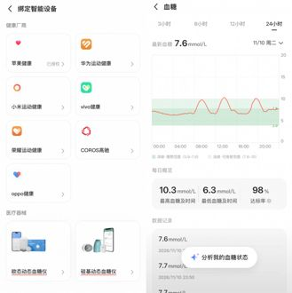

DeepSeek 开放全家桶应用 API。
原文正文要点
联网搜索、深度思考搜索、文件上传、链接阅读，以及首次开放的语音识别和语音合成，都提供独立接口，可以单独调用、分别计费。语音识别五折后为 0.39 元/小时，语音合成为 1.5 元/万字符，Search/Fetch 每千次成功调用 5 元，OCR 每千页 1.5 元；官方同时开源了一个可导入历史对话的轻量聊天前端 Demo。量子位（11-14 10:39）
时间窗口：11-14 08:00 到 11-15 08:15（台北时间）。周末官方渠道更新较少，本期为短版；已与前 7 期去重，每条均核对正文与日期。
联网搜索、深度思考搜索、文件上传、链接阅读，以及首次开放的语音识别和语音合成，都提供独立接口，可以单独调用、分别计费。语音识别五折后为 0.39 元/小时，语音合成为 1.5 元/万字符，Search/Fetch 每千次成功调用 5 元，OCR 每千页 1.5 元；官方同时开源了一个可导入历史对话的轻量聊天前端 Demo。量子位（11-14 10:39）

用户授权后可同步血糖数据，千问结合饮食、运动、作息等情况解读血糖变化。AIbase（11-14）


提供数字滚动、幸运转盘、翻牌三种动画，免费、离线可用；作者称这是第一款独立上架的 iOS App，用 React Native、Expo 和 Codex 开发。V2EX（11-14 19:49）
发帖人睡前安排了一整晚的 Agent 自动任务，醒来发现 Windows 自动更新重启了电脑，帖子引发 31 条讨论。V2EX（11-14 11:02）
以下是本期项目及单日新增星数。
一家澳大利亚风电运维公司招募全栈开发者，从零开发涵盖人事、资质证书、资产、工单、工时审批、HSE、库存成本和数据看板的管理平台，要求熟悉 React、Next.js、TypeScript、PostgreSQL 及 AI 辅助开发工具；帖子未写预算。电鸭（11-14 12:39）
Cursor Changelog 最新一条为 11-06；Anthropic News、OpenAI、Google AI Blog、Ben's Bites 窗口内无新内容；HN 过滤订阅只有 1 条旧内容；AI工具集未找到 11-14/15 的快讯。